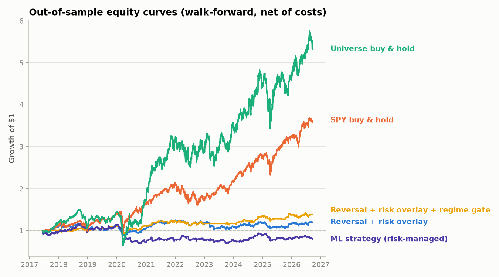

Data Engineering · Statistics · ML
Quant Alpha Research Pipeline
A research and backtesting pipeline in Python for statistical trading strategies, using 10 years of real market data (2016–2026, 23 names). It pulls and caches data from Yahoo Finance and cleans up delistings and ticker reassignments. From there it runs vectorized backtests with look-ahead protection and transaction costs, then applies walk-forward, out-of-sample validation.
- Best strategy: short-term reversal with volatility targeting and a regime gate. It reached an out-of-sample Sharpe of 0.44 (PSR 0.91, max drawdown −16.8%). I cross-checked it against an independent Markov-switching model.
- Rejected an overfit variant that flipped from strongly positive to strongly negative when the lookback window changed.
- Tested ML models (Ridge, Random Forest, Gradient Boosting, and a PyTorch MLP) using purged walk-forward CV and a shuffled-label permutation test as a negative control. None of them beat the noise floor, and I documented them as honest negative results.
- Includes unit tests for the backtest engine, the risk overlay, and feature causality, plus a written research memo.
Python · pandas · NumPy · scikit-learn · PyTorch · statsmodels · matplotlib
View repo →